A founder alone at 2am closes her tabs one by one, and each closed tab leaves a teammate at her table; at dawn the table is empty but the drafts are real and waiting for her review.
40.5 s with the outro · 42 words of dialogue · 2 generation units · estimated $22.24
Open issues
Warnings
one continuous 22 s take: the hook, the Strategist, the Care lead, the table filling
22 s, 2 takes, starts at 0 s
A 22 second cinematic magical-realism short, one continuous generation of six shots, a small apartment office at 2am. Vertical 9:16, ultra-real, ARRI Alexa 35 look, Kodak 500T grain, shallow depth of field; night: cool laptop blue and warm brass lamps; dawn: soft pale gold. Hard motivated cuts. Faces and wardrobe exactly as in the references. BRANDS: the only logo anywhere is the fictional NORTHLANE label on candle jars and kraft boxes, as on the supplied board; every screen shows only abstract glow, never readable text. No on-screen text, captions or subtitles. SOUND: NO MUSIC AT ALL. Only the spoken lines plus natural sound: room tone, a laptop fan, a trackpad click, pencils, keyboards, a low working murmur, dawn birds. MOTION: natural real-time speed in every shot; never slow motion, never a freeze; people keep breathing, blinking, typing, turning pages; the camera drifts or pushes slowly. PHYSICS: teammates never appear, vanish or morph within a shot; the table only fills across hard cuts; no flashes or glitch frames; wardrobe never changes. VOICES: Maya, a North American woman, low, tired and wry. The Strategist: warm alto, matter-of-fact. The Care lead: easygoing tenor. Each speaker is on camera when speaking. 0 to 5 s: extreme close-up, slow push in, Maya lit blue by her laptop, tabs reflected in her glasses; a small tired half-laugh, flat: "Who does all of this at two a.m.?" A one-second beat, then softly answering herself: "Me." 5 to 6 s: insert, her finger clicks the trackpad; a soft click. 6 to 10.5 s: over Maya's shoulder: across the table the Strategist, who was not there before the cut, is already sketching ad layouts; she looks up, warm and matter-of-fact: "Hooks are ready. Want the three strongest?" 10.5 to 16.5 s: medium two-shot: the Care lead relaxed in the chair beside Maya, easygoing, a little amused by her face: "Seventeen refund tickets. Drafts are in your queue. You just approve." Maya stares at him, frozen. 16.5 to 19 s: wide down the long table: about nine teammates now work quietly; Maya at the near end stares. 19 to 22 s: hard cut, the same wide: every chair is now full, sixteen teammates typing and writing, a low working murmur. DELIVERY: every quoted line spoken clearly, exactly as written, once, acted not read, natural breaths. Nothing outside the quotes is ever spoken.
one continuous 14.5 s take: the turn, the Operator's Brand Brain line, dawn and the drafts
15 s, 2 takes, starts at 22 s
A 15 second cinematic magical-realism short, one continuous generation of three shots, continuing in the same apartment office: the full table at 2am, then dawn. Vertical 9:16, ultra-real, ARRI Alexa 35 look, Kodak 500T grain, shallow depth of field; night: cool laptop blue and warm brass lamps; dawn: soft pale gold. Hard motivated cuts. Faces and wardrobe exactly as in the references. BRANDS: the only logo anywhere is the fictional NORTHLANE label on candle jars and kraft boxes, as on the supplied board; every screen shows only abstract glow, never readable text. No on-screen text, captions or subtitles. SOUND: NO MUSIC AT ALL. Only the spoken lines plus natural sound: room tone, a laptop fan, a trackpad click, pencils, keyboards, a low working murmur, dawn birds. MOTION: natural real-time speed in every shot; never slow motion, never a freeze; people keep breathing, blinking, typing, turning pages; the camera drifts or pushes slowly. PHYSICS: teammates never appear, vanish or morph within a shot; the table only fills across hard cuts; no flashes or glitch frames; wardrobe never changes. VOICES: Maya, low, tired, wry. The Operator: dry, kind, unhurried baritone. Each speaker is on camera when speaking. 0 to 7.5 s: wide symmetrical, the full table, a low working murmur; Maya standing at the near end says, stunned, small, almost a whisper: "Who are you people?" A one-second beat. The silver-haired Operator at the far head of the table looks up, dry and kind: "Your growth team. We just need your Brand Brain." (Brand Brain is two plain words) 7.5 to 13 s: hard cut to dawn: soft pale gold light; Maya wakes on the couch under a throw, pushes up her glasses; the long table is empty, chairs pushed in, her laptop glowing alone on the table; she squints at it and reads quietly, a slow sleepy smile: "Sixteen drafts." 13 to 15 s: she reaches for the laptop and pulls it toward her, smiling; early birds outside. DELIVERY: every quoted line spoken clearly, exactly as written, once, acted not read. Nothing outside the quotes is ever spoken.
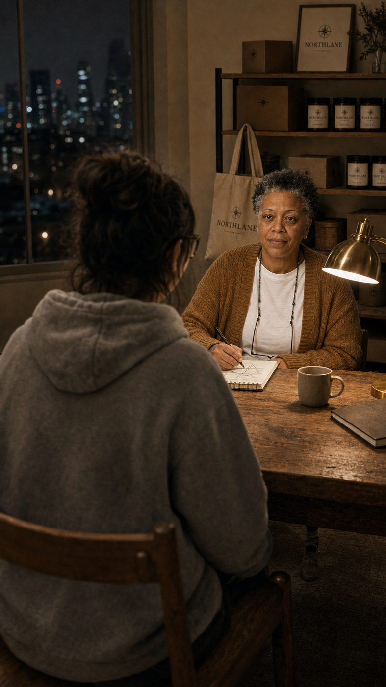
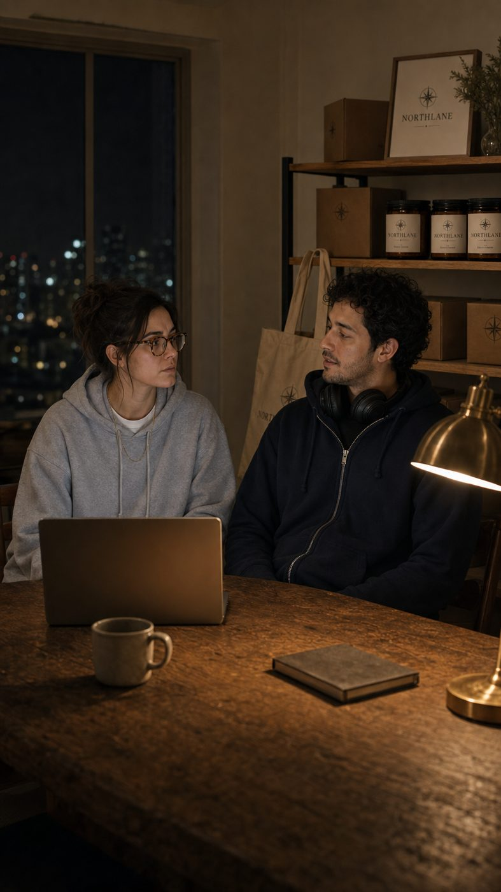
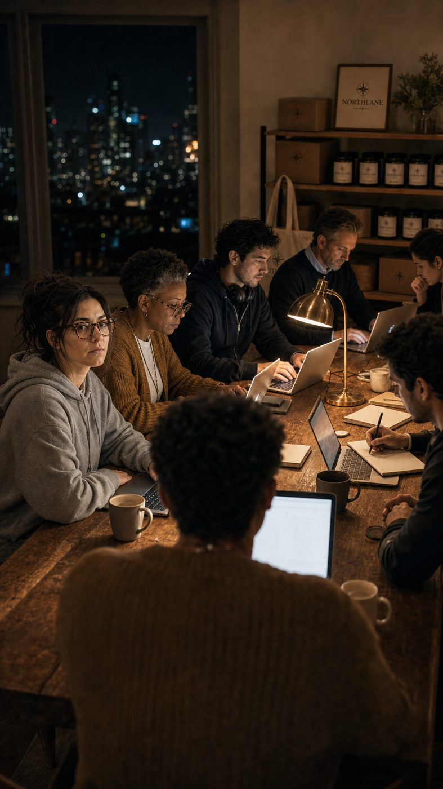
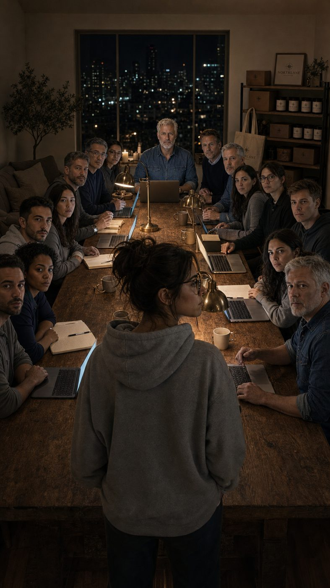
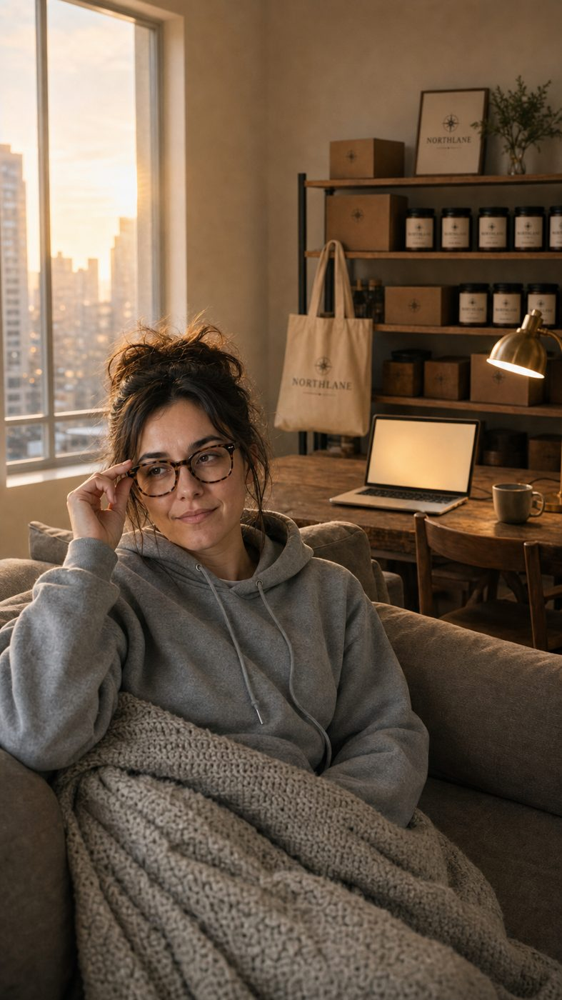
| Time | Who | Line | Unit |
|---|---|---|---|
| 0.4 to 2.8s | Maya (on camera) | “Who does all of this at two a.m.?” tired half-laugh, flat | A |
| 3.8 to 4.4s | Maya (on camera) | “Me.” soft | A |
| 7.0 to 10.0s | The Strategist (on camera) | “Hooks are ready. Want the three strongest?” warm, matter-of-fact | A |
| 11.0 to 16.0s | Care lead (on camera) | “Seventeen refund tickets. Drafts are in your queue. You just approve.” easygoing, amused | A |
| 22.6 to 24.4s | Maya (on camera) | “Who are you people?” stunned, almost a whisper | B |
| 25.4 to 28.8s | The Operator (on camera) | “Your growth team. We just need your Brand Brain.” dry, kind | B |
| 32.2 to 33.4s | Maya (on camera) | “Sixteen drafts.” sleepy smile | B |
| At | Template | Purpose | Sound |
|---|---|---|---|
| 0.2 | cta | hook super naming D-to-C founders, late at night (exact text set in graphics.json) | none |
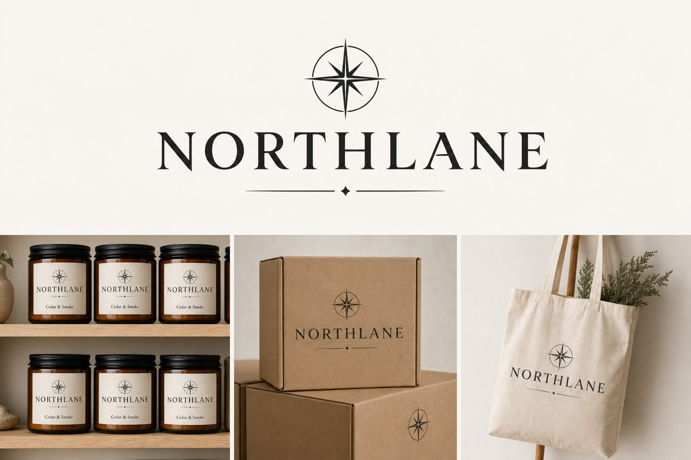
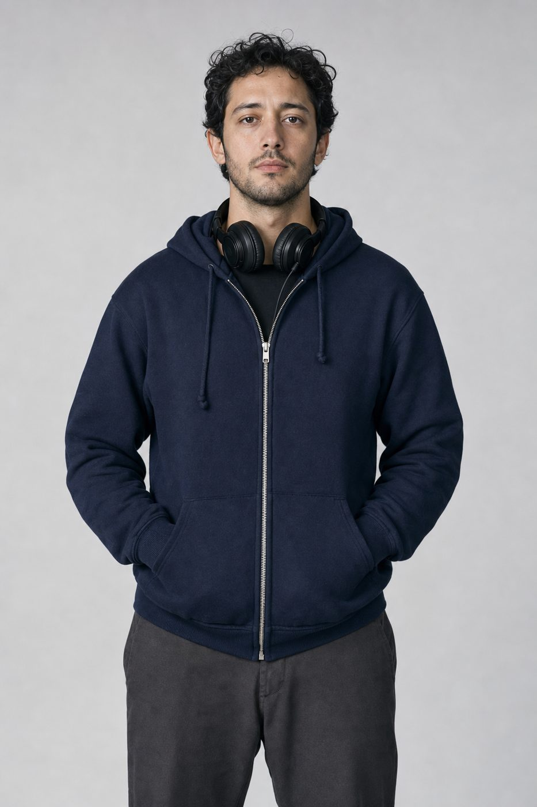
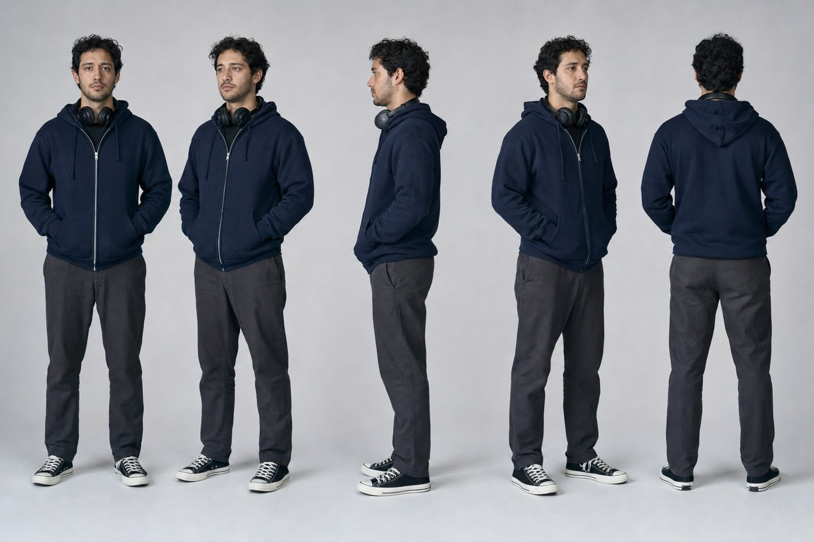
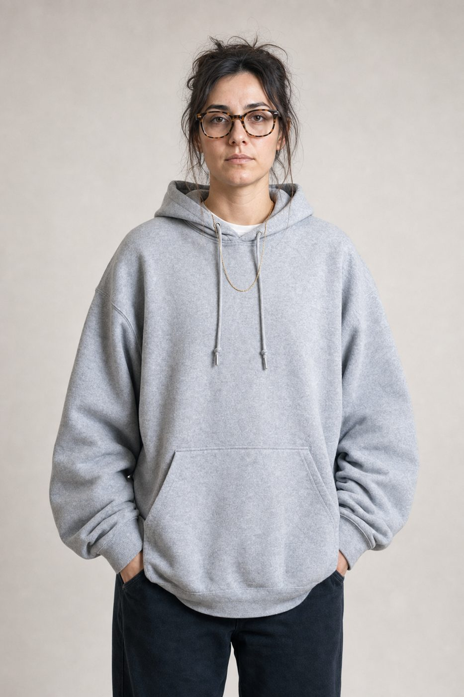
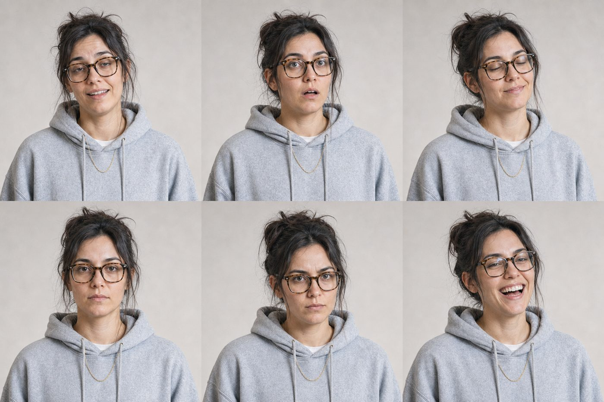
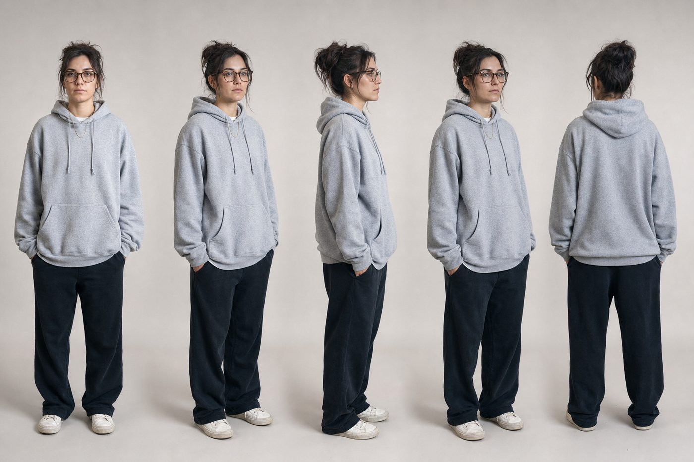
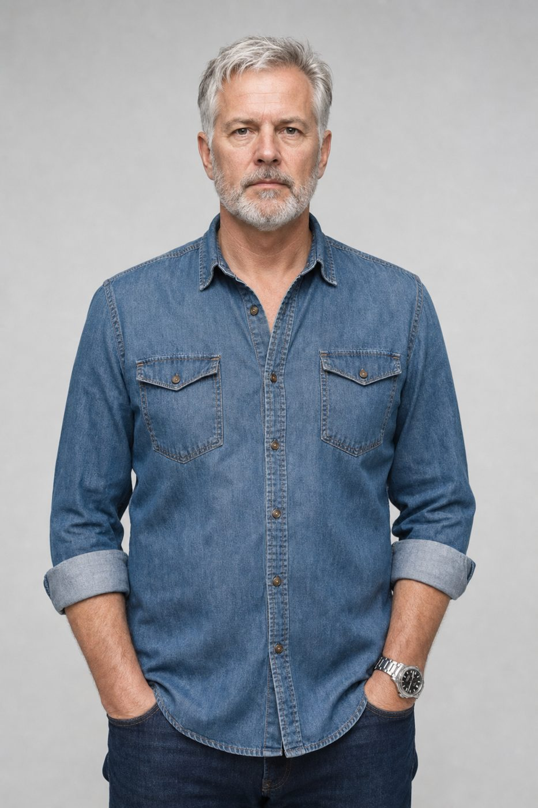
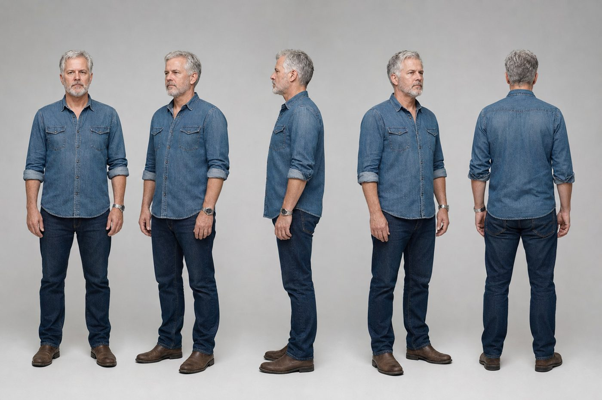
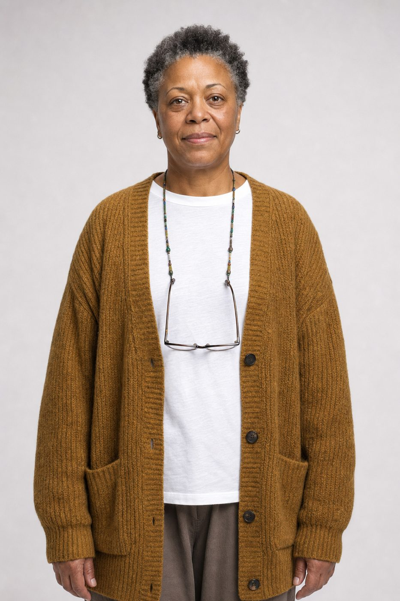
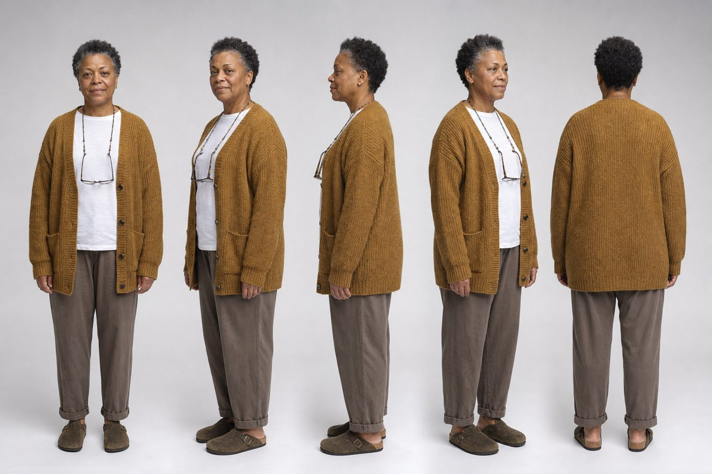
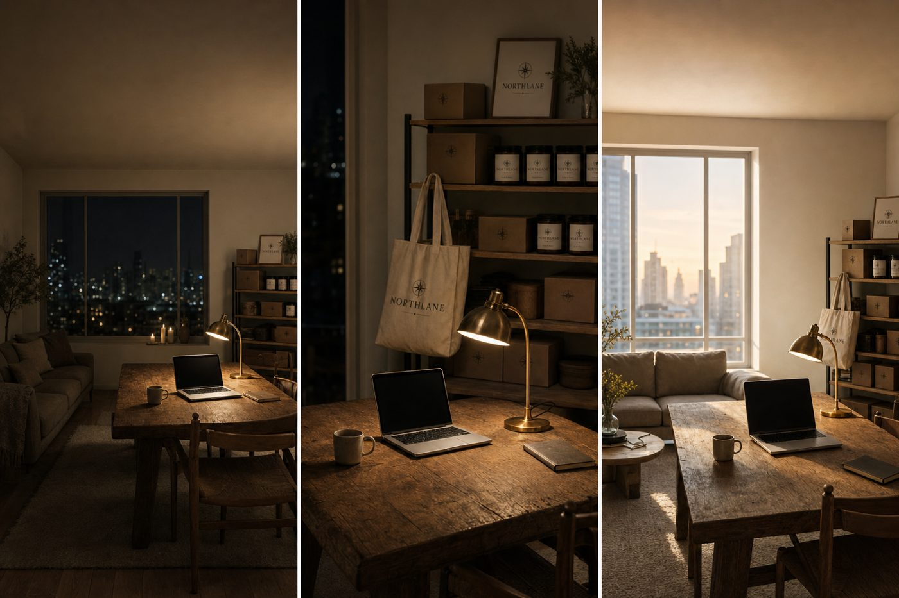